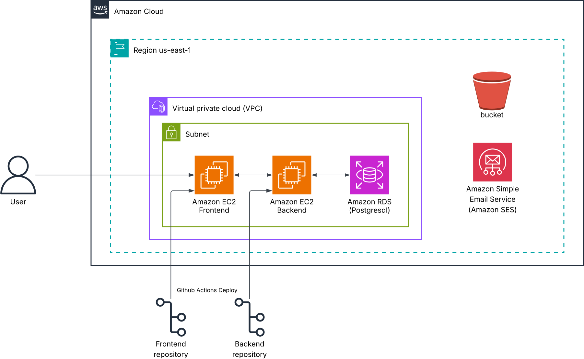

Reimbursement Tracking System – Overview
Welcome to the documentation for the Reimbursement Tracking System.
Introduction
The Reimbursement Tracking System (RTS) is a digital platform designed to simplify and organize the reimbursement process within an organization. It enables employees to create, manage, and submit reimbursement requests for their expenses, while allowing administrators to review, approve, or reject these requests efficiently. By maintaining all data in a centralized system, the platform ensures transparency, accountability, and easier record-keeping of all reimbursement activities.
Problem Statement
At present, Google Forms are used to manage reimbursement claims. This method has proven to be inefficient and disorganized. Employees are unable to view or edit their forms after submission, which leads to errors and a lack of flexibility. Moreover, Google Forms impose several limitations that make it difficult to record detailed expense information. On the administrative side, reviewing, approving, and tracking reimbursement requests is a cumbersome and time-consuming task. The lack of a centralized digital solution also complicates the auditing process, making it challenging to maintain a clear and accurate record of all reimbursement-related activities.
Proposed Solution
To address these challenges, the Reimbursement Tracking System offers a fully digital and structured workflow for managing reimbursements. Employees can easily create reimbursement requests, record detailed expense information, and modify their requests while they remain in draft status. Once a request is submitted, it becomes available for the administrator to review and either approve or reject. The entire process is recorded within the system, ensuring that all requests and decisions are traceable and readily available for auditing. This not only simplifies the workflow for both employees and administrators but also enhances transparency, efficiency, and accountability throughout the reimbursement lifecycle.
It mainly demonstrates
- Basic CRUD operations
- Authentication and Authorization
- Clean API development using Django REST Framework
- A simple frontend (HTML, CSS, JavaScript)
- PWA setup for mobile compatibility
Requirements
- Login & Signup (User authentication)
- Roles: Employee and Admin
- Employees can create reimbursement requests and add expenses
- Admins can review and approve/reject submissions
- CRUD for requests and expenses
- Basic responsive frontend
- PWA for mobile usability
Users
| Role | Description | Access |
|---|---|---|
| Employee | Regular user who creates reimbursement requests and logs expenses. | Can create, edit, delete their reimbursement request and expenses, submit reimbursement request for approval. |
| Admin | Reviewer who approves or rejects reimbursement request. | Can view all reimbursement requests, approve or reject them, and manage users. |
Future Scope
1. Email Notifications:
Implement an automated email notification system to improve communication between employees and admins.
When an employee submits a reimbursement request, the admin will receive an email alert. Similarly, when the admin approves or rejects a request, the employee will be notified.
This will ensure timely updates, greater transparency, and smoother workflow coordination.
2. Expense Proof Uploads:
Introduce a feature allowing employees to upload supporting documents or receipts when submitting expenses.
These files can be securely stored and managed using AWS S3, offering scalable storage, reliable access, and enhanced audit and verification capabilities.
3. Enhanced Admin Functionality:
Expand the admin dashboard and feature set to improve financial tracking, decision-making, and workflow control.
Planned enhancements include:
-
Partial Request Approval:
Allow admins to approve or reject individual expenses within a reimbursement request instead of approving or rejecting the entire request.
This gives admins better control over expense validation and ensures legitimate items are not held up by problematic entries. -
Expense Categories Table:
Introduce a dedicated categories table to standardize expense classification (e.g., Travel, Meals, Lodging, Office Supplies).
This structure will support category-based filtering, reporting, and policy enforcement — making it easier to analyze spending patterns across departments. -
Expanded Role Management:
Add more granular user roles beyond justadminandemployee, such as Lead, Manager, Senior Engineer, or Finance Officer.
Each role will have customized access and approval privileges to create a multi-level review and authorization workflow. -
Advanced Analytics & Reporting:
Equip the admin dashboard with analytical tools to:- Display expenses day-wise, category-wise, and user-wise.
- Generate monthly or quarterly summaries of total claims, approved amounts, and pending reimbursements.
- Offer data visualization (charts/graphs) for a clear overview of organizational spending patterns.
-
Enhanced Financial Oversight:
Enable admins to track the total approved amount across departments, projects, or time periods.
This feature will help finance teams manage budgets effectively and identify abnormal spending trends early.
Future Schema Diagram

Future Architecture Diagram

Next: Functional Documentation